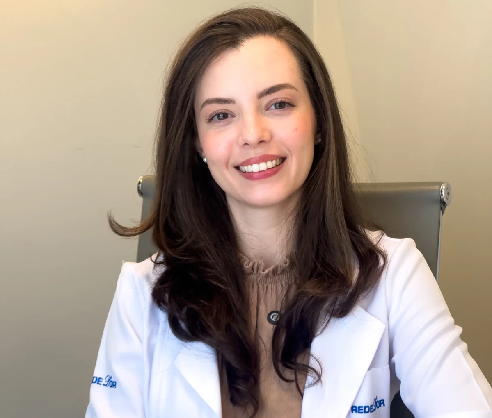
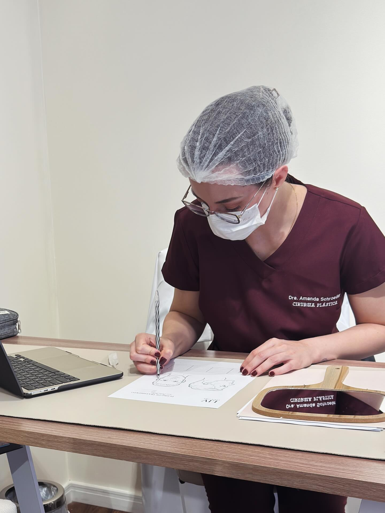
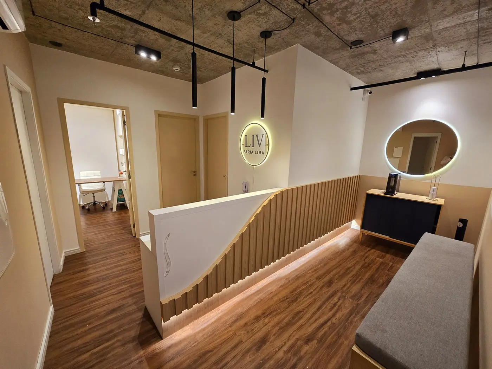
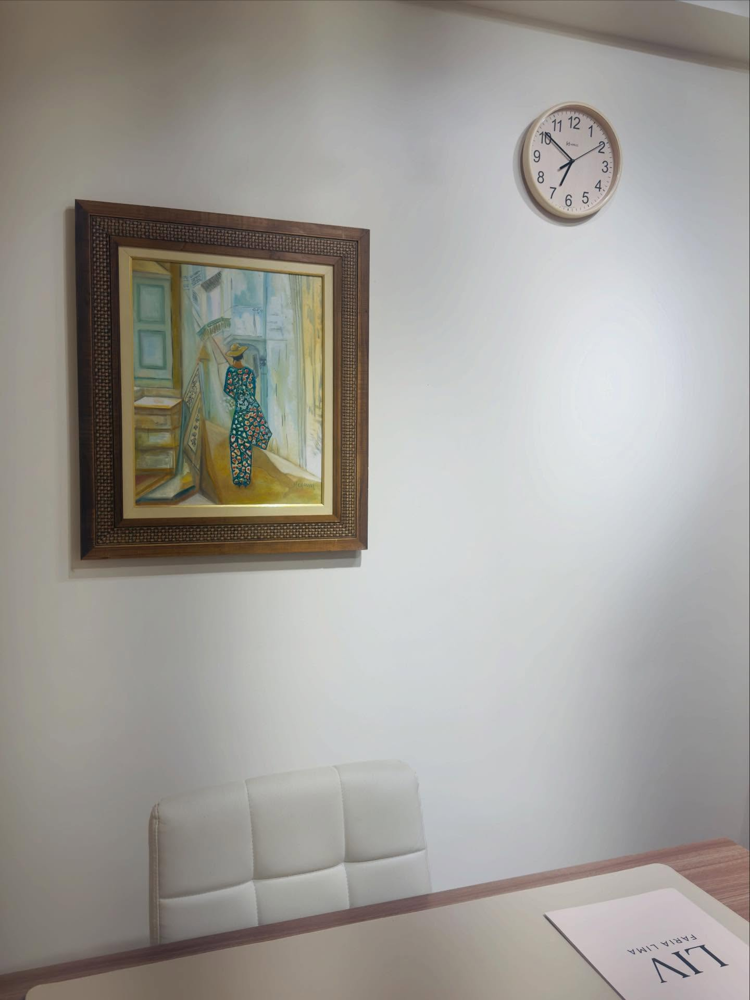
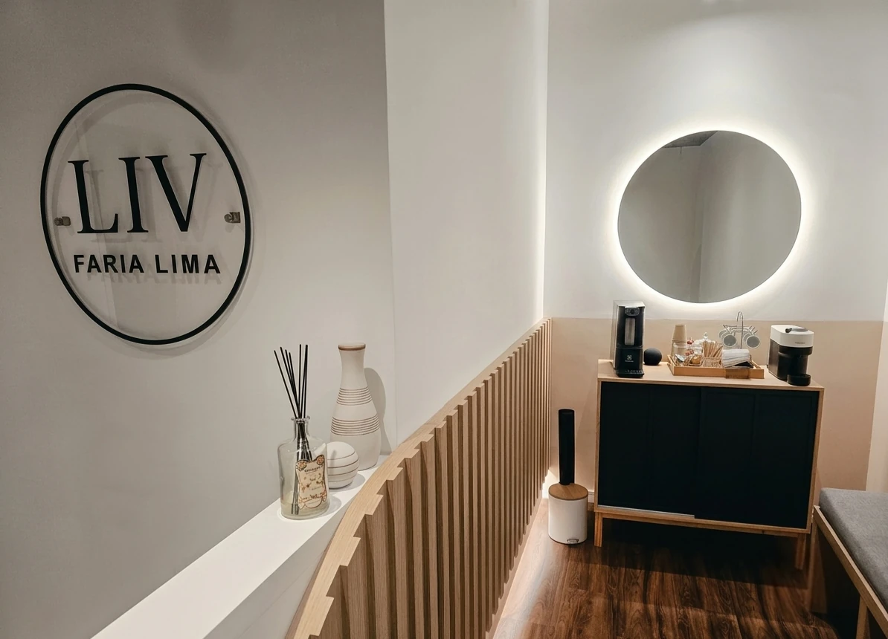
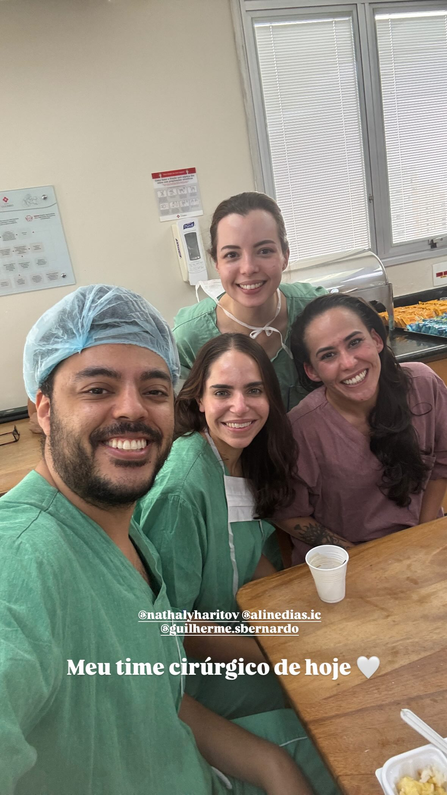

“Percebi uma mudança.”
Olhar cansado, perda de contorno, flacidez, assimetria ou outra mudança pode ser o ponto de partida da conversa.
Você não precisa chegar sabendo o nome de uma técnica. A conversa começa pelo que você percebe; o exame organiza as estruturas envolvidas e as possibilidades que podem — ou não — ser coerentes para você.
Dra. Amanda Schroeder · Cirurgia Plástica · CRM-SP 191605 · RQE 110472 · Pinheiros
Consulta particular na Clínica LIV Faria Lima · Nota fiscal para reembolso

Olhar cansado, perda de contorno, flacidez, assimetria ou outra mudança pode ser o ponto de partida da conversa.
A consulta ajuda a diferenciar o que pode ser tratado por cirurgia, alternativas não cirúrgicas ou cuidado em etapas.
É possível revisar uma indicação recebida, entender limites e organizar dúvidas antes de decidir.
Você pode ir direto à página específica. Na consulta, essa possibilidade entra na conversa e é confirmada depois do exame para endereçar sua queixa.
A consulta não é um catálogo de técnicas. Ela organiza a decisão a partir da sua história, do exame e das prioridades reais.
O que mudou, há quanto tempo, em quais situações você percebe e o que espera preservar.
Pele, volumes, movimento, sustentação, proporções e continuidade entre as áreas são observados conforme a queixa.
Benefícios esperados, limites, cicatrizes, recuperação e alternativas são discutidos com linguagem direta.
O próximo passo pode ser um procedimento, uma abordagem em etapas, acompanhamento ou não intervir naquele momento.

Nem todos os itens precisam ser investigados da mesma forma em todas as pessoas. O exame é direcionado pela queixa.
Elasticidade, textura, excesso, cicatrização prévia e mudanças associadas ao tempo.
Distribuição de volume, estruturas profundas, expressão e participação muscular.
Olhos, terço médio, mandíbula, queixo e pescoço são relacionados quando interferem na queixa.
Histórico, medicamentos, hábitos, disponibilidade para recuperação e expectativas entram no planejamento.
Você pode ir direto à página específica. Na consulta, essa possibilidade entra na conversa e é confirmada depois do exame para endereçar sua queixa.



A decisão sobre onde e como operar depende do procedimento e das necessidades clínicas de cada caso.

Composição organizada conforme o plano e as necessidades do caso.
Dra. Amanda com parte de sua equipe cirúrgica. O ambiente, a anestesia e a composição da equipe são organizados conforme o plano e as necessidades de cada caso. Quando indicado, o procedimento pode ser realizado no Hospital Sírio-Libanês, Hospital Nove de Julho, Hospital Oswaldo Cruz ou em outra instituição criteriosamente selecionada.
Um vídeo e leituras curtas sobre a queixa, a consulta e os receios que costumam aparecer antes de uma decisão.
“Fui com a intenção de realizar um procedimento específico, mas ela me orientou para uma opção mais adequada, respeitando minhas características.”Ana Elisa D’Annibale
“Esclareceu todas as minhas dúvidas desde a primeira consulta até o pós-operatório, sempre muito profissional e humana.”Nicoli Cadioli
“Ótima formação profissional, coerência, acolhimento e me passa segurança.”Raphaela Garofo
Não. A consulta pode começar pela mudança que você percebe. O exame e a conversa ajudam a organizar quais possibilidades fazem sentido e quais não são indicadas.
Sim. Elas podem ajudar a explicar preferências e receios, mas não definem uma técnica nem tornam possível reproduzir o resultado de outra pessoa.
Sim. A conclusão pode ser cirurgia, tratamento não cirúrgico, cuidado em etapas, acompanhamento ou nenhuma intervenção naquele momento.
A avaliação presencial permite exame físico e planejamento. A teleconsulta pode organizar uma conversa inicial em casos selecionados, mas não substitui o exame necessário ao plano definitivo.
Leve informações sobre saúde, cirurgias anteriores, medicamentos e suplementos. Também vale anotar dúvidas, mudanças percebidas e prioridades para a conversa.
Depois de compreender a queixa e examinar as estruturas envolvidas, a médica pode explicar possibilidades, limites, cicatrizes, recuperação e os próximos passos para um orçamento individualizado.
A equipe informa horários, localização e orientações para a avaliação particular na Clínica LIV Faria Lima.
Agendar avaliação